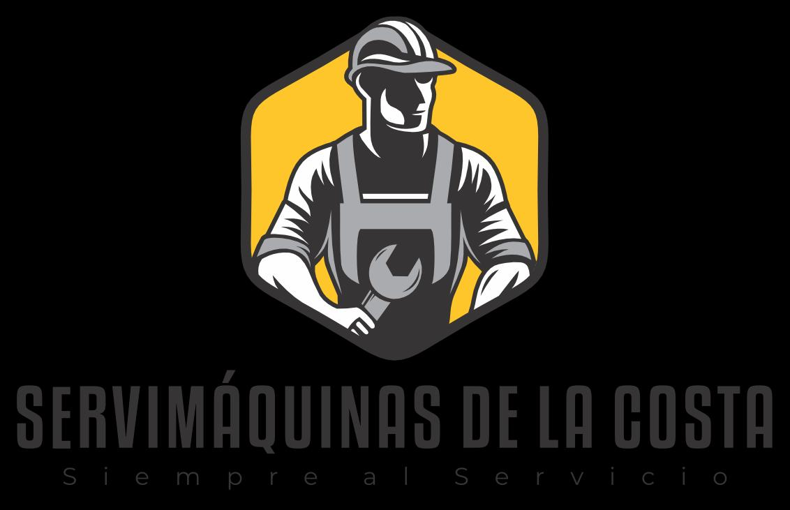

Nuestro respaldo técnico no es un complemento. Es parte esencial de nuestra propuesta de valor.
Evaluaciones en campo, análisis técnico detallado y asesoría especializada para garantizar decisiones correctas.
Realizamos pruebas técnicas y evaluaciones que permiten optimizar el rendimiento de maquinaria pesada.
Más que vender repuestos, acompañamos técnicamente cada operación para reducir riesgos y tiempos muertos.
